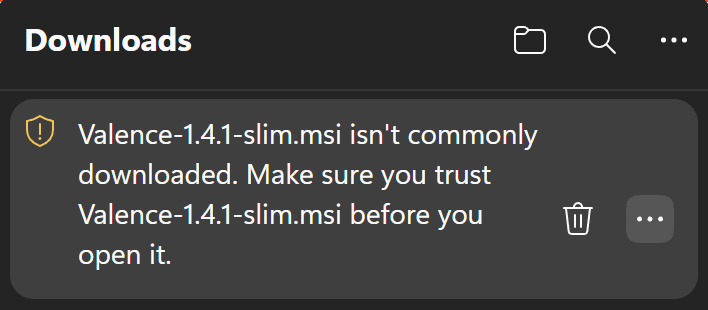
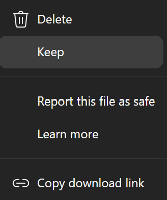
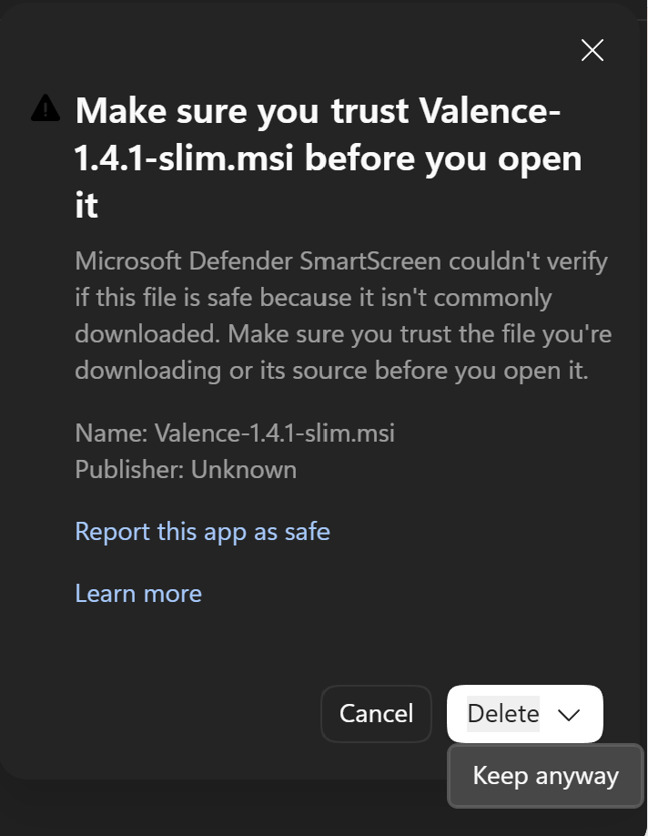
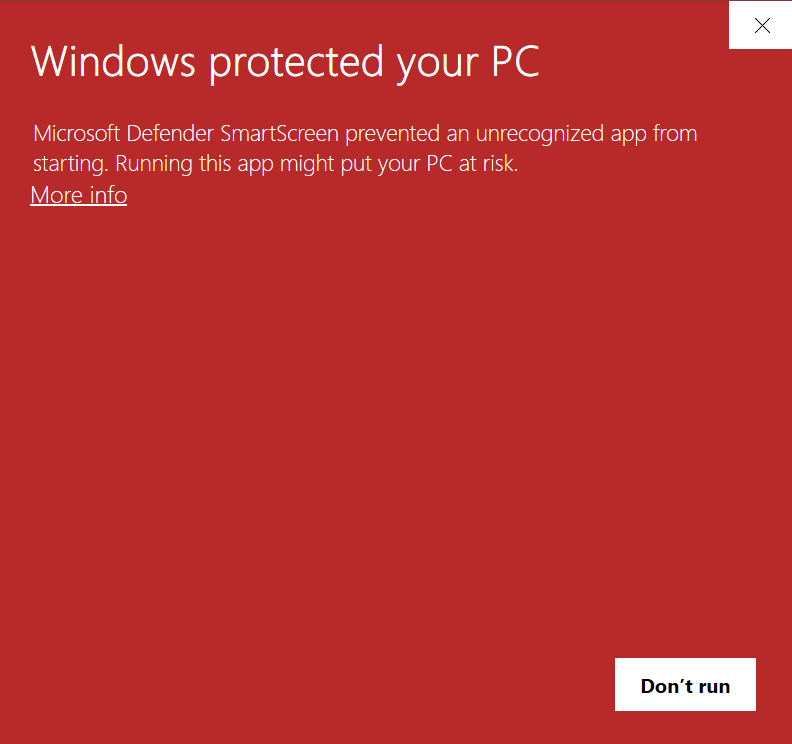
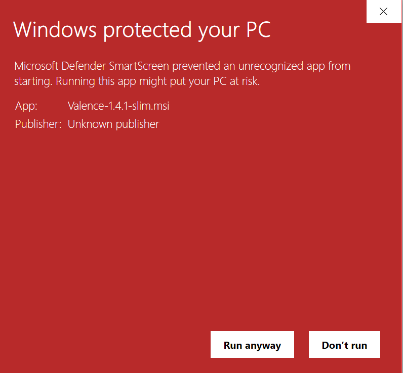
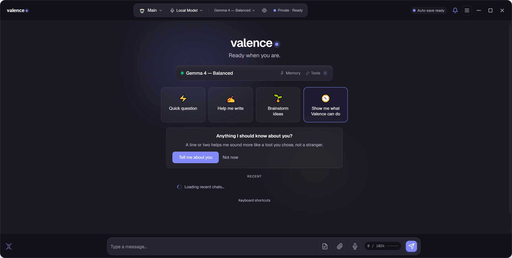
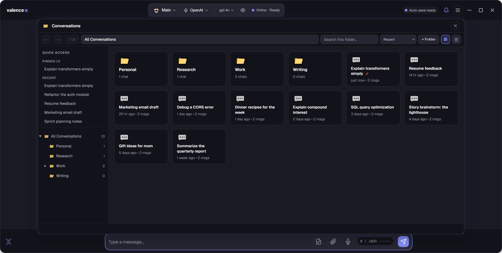

Valence is a private AI that lives on your computer. This guide walks you through it in plain language: no jargon, nothing to sign up for. Install it, get past the Windows warnings, say hello, and keep the conversations worth keeping. Everything else is waiting in the docs when you want it.
Valence installs like any normal Windows app. There are two downloads. Pick whichever line you like. Both are the same app with the same privacy; they only differ in how much they download up front.
The difference between them is only the graphics support. The slim installer fetches the one piece your card needs while it installs. The all-in-one carries every version in the box instead, which suits locked-down machines. Either way your AI model is a separate one-time download on first run, so neither installer is the whole thing on its own.
Valence is brand new, so Windows hasn’t seen it enough times to recognise it yet. You’ll meet a few warnings the first time, not because anything is wrong, but because that’s how Windows treats every new app until it becomes well-known. Here is every screen you’ll see, and exactly what to click. Click any picture to enlarge it.





✓ After the first time, these prompts stop: Valence opens like any other app. “Publisher: Unknown” simply means the app isn’t code-signed yet; it doesn’t mean anything is wrong. To be certain you have the genuine file, the SHA-256 fingerprint for each download is published on the download page.
The first time you open Valence, a short guided setup runs. It takes a quick look at your computer, right there on your machine, nothing is sent anywhere, and gets your own private AI ready to go. No account. No key. No settings to wrestle with.
Valence takes one quick look at your computer, processor, memory, graphics, free space. This happens entirely on your PC; nothing is sent anywhere. It then tells you plainly what it found.
Your on-device AI model arrives. A one-time download. Valence fetches only what your machine actually needs, with honest progress for each item rather than a spinner.
It shows you what's running and where, your graphics card doing the work if you have one, and hands you the chat. You're all set.
Prefer an online account? You can connect ChatGPT, Claude, or Gemini instead of using the built-in AI. The setup offers that right at the start, and you can change your mind later. Want maximum privacy? A Local-only toggle switches off every optional online feature from the very beginning. (It won't block the things you explicitly ask for, like downloading your model or importing old chats.)
The main screen is a chat. Type in the box at the bottom and your AI replies. A small badge up top always tells you, in plain words, which AI you're using and where it's running.
Send a message, attach a file or an image, or click the microphone to talk instead of type. Your reply appears cleanly formatted, want to watch it write in real time? One click.

Any chat can be saved, organized into folders, and reopened whenever you want. Nothing is saved to a server. It all lives on your computer.
Open the menu and choose Save chat. Later, Load chat opens a friendly browser: search, pin your favorites, and sort chats into folders like Work, Personal, or Research.
